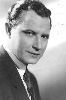

Country:United States, 64 minutes
Spoken languages:English
Genres:Horror, War
Director(s):William Nigh
Writer(s):Harvey Gates
Video Codec:Unknown
Number: 51


Certification:
Storyline:
It is prior to the commencement of World War II, and Japan's fiendish Black Dragon Society is hatching an evil plot with the Nazis. They instruct a brilliant scientist, Dr. Melcher, to travel to Japan on a secret mission. There he operates on six Japanese conspirators, transforming them to resemble six American leaders. The actual leaders are murdered and replaced with their likeness.
Cast: 


Medium: Original DVD,
Comments: Part of: 100 Greatest Horror Classics
Loaned: No
Aspect ratio: Unknown